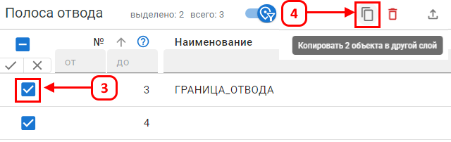
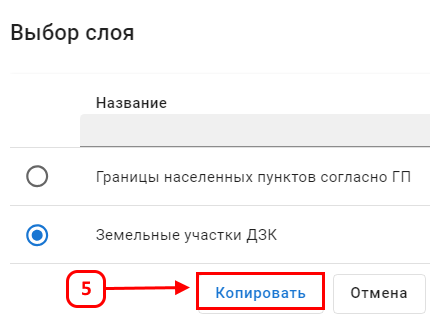

Копирование объектов между слоями
Функция позволяет копировать выбранные объекты из текущего слоя в целевой слой.
Выполнение копирования
- Откройте дополнительное меню управления слоем (1).
- Выберите пункт Открыть таблицу атрибутов (2).
- Выделите объект в атрибутивной таблице (3), после этого нажмите на появившуюся кнопку копирования (4).

- В открывшемся окне выберите слой для копирования, после этого нажмите (6).

После выполнения действий выбранные объекты будут скопированы в целевой слой.